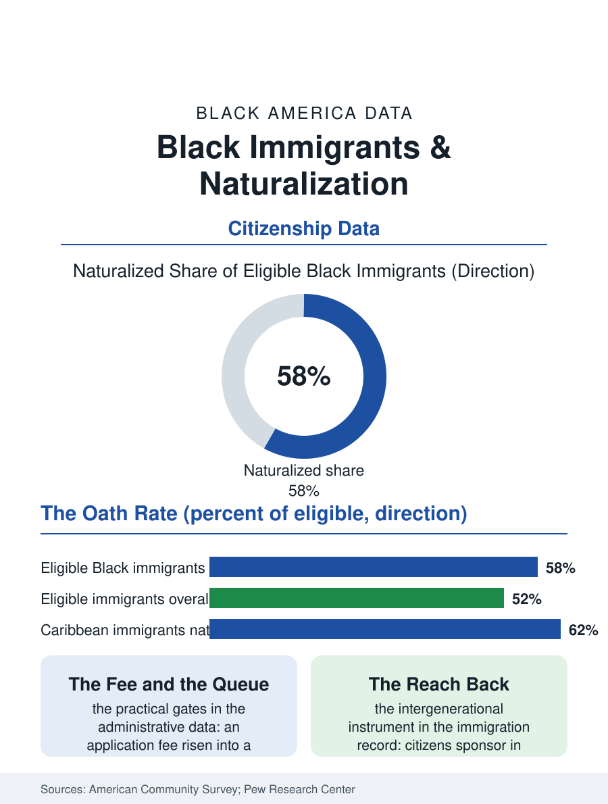

Black Census
The Oath: Black Immigrants and Naturalization
Black immigrants naturalize at high rates, Caribbean immigrants highest of all, converting the oath into ballots, petitions, and protection. The naturalization file.

Citizenship is the finish line of the immigrant files, and Black immigrants cross it at high rates: a majority of eligible Black immigrants have naturalized in the recent survey data, a share comparing favorably with the immigrant population overall, with Caribbean immigrants among the most likely of any origin group to take the oath. This article reads the naturalization file, the point where the foreign-born Black population becomes, in law, simply Black American voters, jurors, and sponsors of the next arrivals.
Who Naturalizes, and How Fast
The American Community Survey's citizenship tables sort the eligible population instructively. Naturalization rises with years of residence, income, and English proficiency in every origin group, and the Black immigrant population's composition, heavily weighted toward long-resident Caribbean communities and toward the refugee and professional African streams, produces strong aggregate numbers. Haitian and Jamaican immigrants naturalize at rates the Pew analyses place near the top of the origin table, a pattern demographers attribute to the communities' age, their settlement permanence, and a civic tradition in which the citizenship ceremony is a family milestone celebrated like a graduation. African immigrants naturalize more variably by entry category: refugees and diversity lottery winners, whose status paths are comparatively direct, naturalize at high rates once eligible, while some professional streams delay, holding careers and properties across two countries. The fee and the civics test are the file's practical gates, the application cost having risen across the decades into a genuine barrier for low-wage workers, against which fee waivers and the nonprofit legal services network push with documented effect; the oath's backlog, the months between approval and ceremony in the busiest districts, is the file's most purely administrative column, a queue for a status already earned.
What the Oath Unlocks
The consequences stack in the order the immigrant files predict. The ballot first: naturalized Black immigrants vote at rates in the turnout studies comparable to the native-born once registered, and their concentration in Florida, New York, and Georgia gives the Caribbean and African electorates measurable weight in the states where modern American politics is decided. The petition second: citizens sponsor relatives in preference categories closed to permanent residents, and can bring spouses and minor children without numerical limit, so each naturalization accelerates a family's reunification arithmetic, the chain the Caribbean file describes, making the oath an intergenerational instrument rather than a personal one. The third consequence is protection: citizenship ends deportability, a status change whose value the enforcement era has repriced upward for every immigrant household, and which the naturalization application surges in the administrative data track, rising and falling with the political weather in a way no civics curriculum explains. Occupational licensing, federal employment, and the security-clearance economy form the quiet fourth column, the oath as a job qualification across the public and contractor workforce files in this atlas.
The Second Generation's Inheritance
The file closes where the immigrant story always closes, with the children. The second generation, citizens by birth, inherit the oath's benefits as their birthright, and their outcomes in the education files, the immigrant advantage in attainment that the data record for Black immigrants' children, unfold inside the citizenship their parents may have spent a decade obtaining. The naturalization file's last datum is the ceremony itself, conducted in courthouses and, memorably, in the historic sites of Black America, where the oath's words about the constitution land on ground that gives them their full weight. The rates say Black immigrants take that oath at among the highest rates of any population in the survey. The file records it as the immigrant files' logical conclusion: a population that crossed an ocean or a sea to join this country tends, when the door is finally held open in the form of a form and a fee and a test, to walk through it and close it behind them as citizens, then reach back through it for everyone still coming. That reach, repeated a million times, is how the foreign-born tenth of Black America keeps becoming the whole.
The military writes a distinct line in the file: service members and their families naturalize through an expedited channel, and Black immigrants, who enlist at meaningful rates in the immigration data, use it as one of the fastest documented paths from arrival to oath, sometimes taking citizenship in uniform within a few years of landing. The channel closes the file's loop neatly, the republic conferring its membership through its oldest institution on the newcomers who volunteered to defend it.
More in Black Census
The Black Population of the United States: Size, Definitions, and Distribution
The Black population of the United States totals 52.8 million — 15.4 percent of the nation. How the Census Bureau defines and counts the population, and where it lives.
Black Median Household Income in the United States
Black median household income stands at $56,490 in the Census Bureau's annual income report — how the figure is measured, how it compares, and what drives it.
The Black Poverty Rate: Levels, Children, and the Long Trend
The official Black poverty rate is 17.1 percent — against 11.1 percent nationally and 7.7 percent for non-Hispanic White Americans. How poverty is measured and what the data show.
Source: U.S. Census Bureau, American Community Survey citizenship data; Pew Research Center naturalization analyses; U.S. Citizenship and Immigration Services statistics.